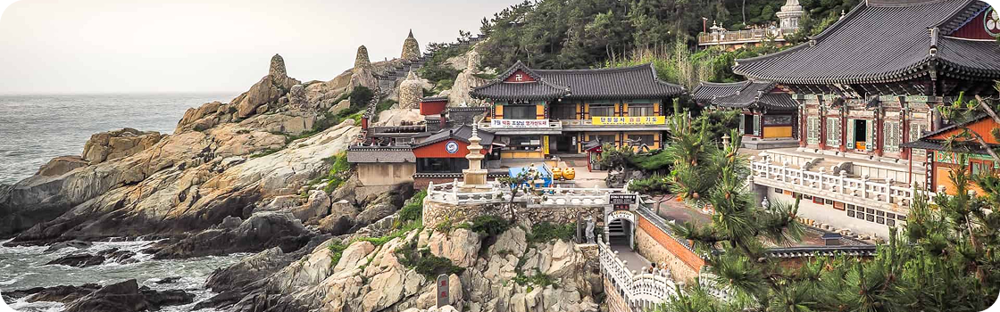
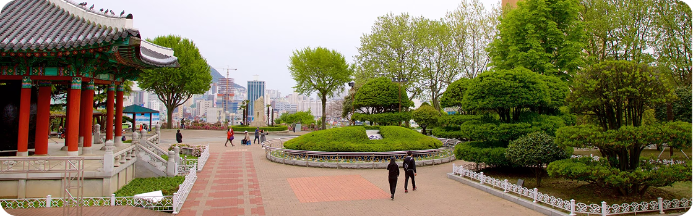

1. Templo Haedong Yonggungsa
O templo Haedong Yonggungsa é um templo budista localizado no extremo nordeste
de Busan. Construído em 1376, é um dos poucos templos na Coreia construídos à
beira-mar - você pode desfrutar de vistas do Mar do Leste de um lado e de belas
montanhas do outro.

3. Parque Yongdusan
O parque Yongdusan, localizado no centro de Busan, abriga alguns dos monumentos
mais importantes da cidade. Você pode ver vistas espetaculares do topo da torre
Busan, de 120 metros de altura. O parque tem 2 museus - confira os instrumentos
musicais tradicionais no Museum of World Folk Instruments e mais de 80 veleiros
coreanos no Exhibition Hall of World Model Boats.
Bom para:
- Casais
- Famílias
- Orçamentos